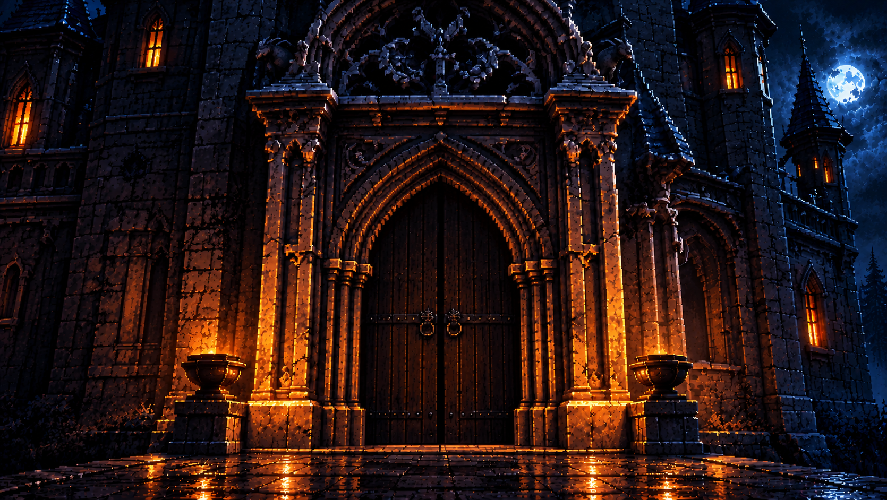
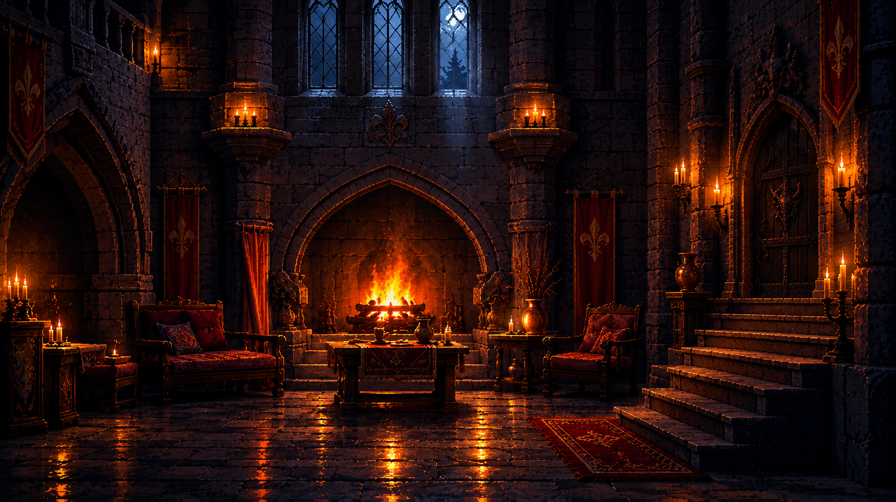

Os portões imponentes da fortaleza observam em silêncio. A luz fraca das tochas mal arranha a escuridão destas paredes antigas, onde cada pedra guarda o eco de quem entrou e nunca mais voltou.

O salão principal recebe os visitantes com um calor enganoso e sombras dançantes. O ar pesado e o silêncio sepulcral denunciam que algo aqui apenas espera o momento certo para se revelar.

Quando as chamas da esquerda morrem, o breu reclama seu território. A escuridão engole o corredor, revelando finalmente o que o brilho intenso do fogo antes escondia.

Oculta sob o calor das chamas, esta antiga chave dourada aguardava nas sombras. Seu metal frio guarda segredos trancados há séculos, sendo a única forma de abrir os caminhos selados.

Uma ferramenta pesada, marcada pelo tempo e pela ferrugem. Mais do que um objeto abandonado, é o instrumento essencial para sufocar as chamas e revelar o que se esconde por trás do fogo.